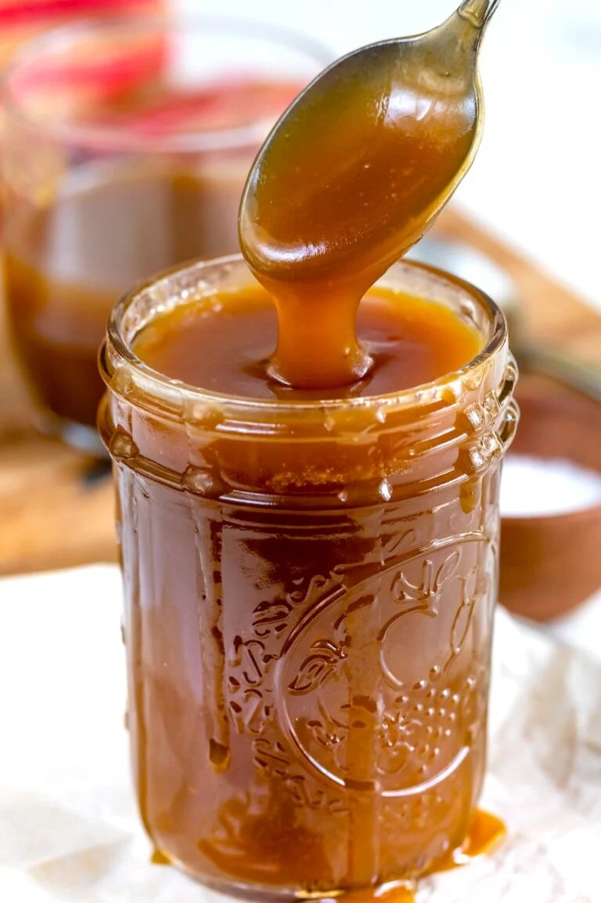

Fast Caramel Sauce

Description
A fast and easy recipe to make some homemade caramel sauce, you don't even need a thermometer, just 5 ingredients.
Ingredients
- 0.5 cup unsalted butter, cubed
- 1 cup packed brown sugar
- 0.25 cup milk
- 1 teaspoon vanilla extract
- 0.25 teaspoon kosher salt or sea salt (or to taste)
Steps
- Place butter in a saucepan and melt over medium-low heat.
- Add the brown sugar and milk and turn heat to medium. Stir constantly until the mixture boils. Boil for 2 minutes.
- Remove from heat and stir in vanilla and salt.
-
Pour into jar or container of choice. Let cool slightly before using.
Cover. Store in refrigerator if not using the day it's made.
Return to Homepage